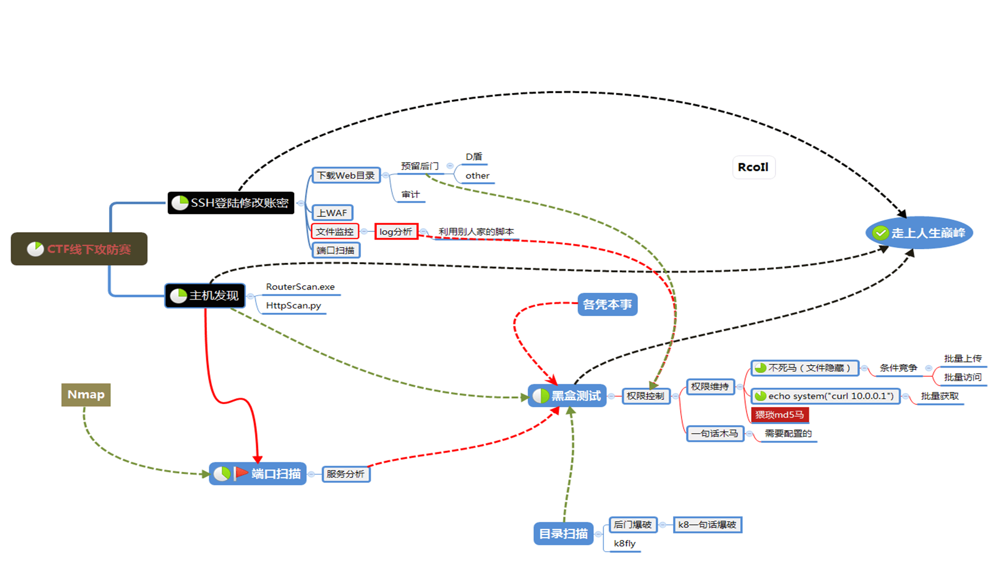

【WEB】AWD技巧¶

建立信息网络¶
《孙子兵法·谋攻》：「知彼知己，百战不殆。」
组件发现：
find / -name "nginx.conf" #定位nginx目录
find / -path "*nginx*" -name nginx*conf #定位nginx配置目录
find / -name "httpd.conf" #定位apache目录
find / -path "*apache*" -name apache*conf #定位apache配置目录
网站发现：
通常都位于 /var/www/html 中，如果没有试试 find 命令
日志发现：
对日志的实时捕捉，除了能有效提升防御以外，还能捕捉攻击流量，得到一些自己不清楚的攻击手段，平衡攻击方和防守方的信息差。
/var/log/nginx/ #默认Nginx日志目录
/var/log/apache/ #默认Apache日志目录
/var/log/apache2/ #默认Apache日志目录
/usr/local/tomcat/logs #Tomcat日志目录
tail -f xxx.log #实时刷新滚动日志文件
以上是定位常见文件目录的命令或方法，比赛需要根据实际情况类推，善用find命令！
文件监控
文件监控能及时木马文件后门生成,及时删除防止丢分。
其他命令：
netstat -ano/-a #查看端口情况
uname -a #系统信息
ps -aux ps -ef #进程信息
cat /etc/passwd #用户情况
ls /home/ #用户情况
id #用于显示用户ID，以及所属群组ID
find / -type d -perm -002 #可写目录检查
grep -r “flag” /var/www/html/ #查找默认FLAG
口令更改¶
这里需要更改的口令包括但不限于服务器SSH口令、数据库口令，WEB服务口令以及WEB应用后台口令。
passwd username #ssh口令修改
set password for mycms@localhost = password('123'); #MySQL密码修改
find /var/www//html -path '*config*’ #查找配置文件中的密码凭证
建立备份¶
除了攻击成功可以让对手扣分，还能破坏对方环境使其宕机被check扣分；同时己方也有可能在修复过程中存在一些误操作，导致源码出错，致使服务停止；对页面快速恢复时，及时备份是必要的，因此页面备份至关重要。
压缩文件：
要注意的是 有的题目环境可能不支持 zip
解压文件：
备份到服务器：
上传下载文件：
scp username@servername:/path/filename /tmp/local_destination #从服务器下载单个文件到本地
scp /path/local_filename username@servername:/path #从本地上传单个文件到服务器
scp -r username@servername:remote_dir/ /tmp/local_dir #从服务器下载整个目录到本地
scp -r /tmp/local_dir username@servername:remote_dir #从本地上传整个目录到服务器
备份指定数据库：
数据库配置信息一般可以通过如config.php/web.conf等文件获取。
备份所有数据库：
导入数据库：
代码审计¶
将备份下载下来后，立即在本地开展审计工作，确定攻击手段和防御策略，要注意因为awd时间短，且代码量多所以考核的题目应该也不会太难，通常不会涉及到太难的代码审计。
- D盾：查杀后门
- seay源代码审计：审计代码
一般AWD模式中存在的后门：
- 官方后门 / 预置后门
# 可以使用下面的代码进行查找
find /var/www/html -name "*.php" |xargs egrep 'assert|eval|phpinfo\(\)|\(base64_decoolcode|shell_exec|passthru|file_put_contents\(\.\*\$|base64_decode\('
-
常规漏洞 如SQL注入 文件上传 代码执行 序列化及反序列化...
-
选手后门（选手后期传入的木马）
漏洞修复¶
在代码审计结束后，及时对自身漏洞进行修补，要注意的是漏洞修复遵循保证服务不长时间宕机的原则, 应当多使用安全过滤函数，能修复尽量修复,不能修复先注释或删除相关代码，但需保证页面显示正常。
应急响应¶
通过命令查看可疑文件：
find /var/www/html -name *.php -mmin -20 #查看最近20分钟修改文件
find ./ -name '*.php' | xargs wc -l | sort -u #寻找行数最短文件
grep -r --include=*.php '[^a-z]eval($_POST' /var/www/html #查包含关键字的php文件
find /var/www/html -type f -name "*.php" | xargs grep "eval(" |more
不死马查杀：
杀进程后重启服务，写一个同名的文件夹和写一个sleep时间低于别人的马(或者写一个脚本不断删除别人的马)
比如写个马来一直杀死不死马进程：
后门用户查杀：
UID大于500的都是非系统账号，500以下的都为系统保留的账号，使用userdel -r username 完全删除账户
其他查杀：
部分后门过于隐蔽，可以使用ls -al命令查看所有文件及文件修改时间和内容进行综合判断，进行删除。可以写脚本定时清理上传目录、定时任务和临时目录等
进程查杀
关闭端口
netstat -anp #查看端口
firewall-cmd --zone= public --remove-port=80/tcp –permanent #关闭端口
firewall-cmd –reload #重载防火墙
*咳咳，本着不重复造轮子的原则（ 才不是懒ww，经验中大部分内容就直接搬过来了，稍微改了下分组和补充了点内容，原 【先知社区】AWD比赛入门攻略总结